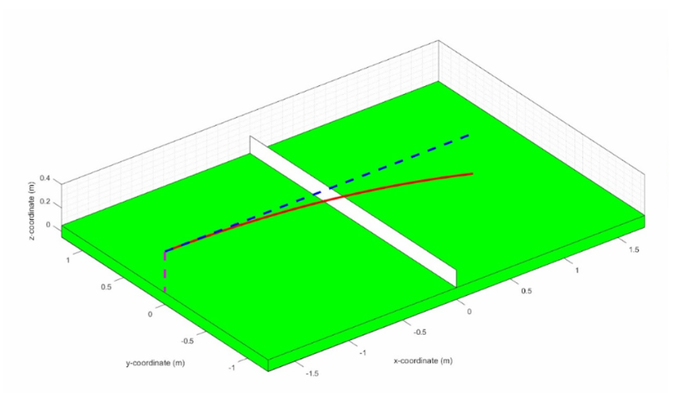
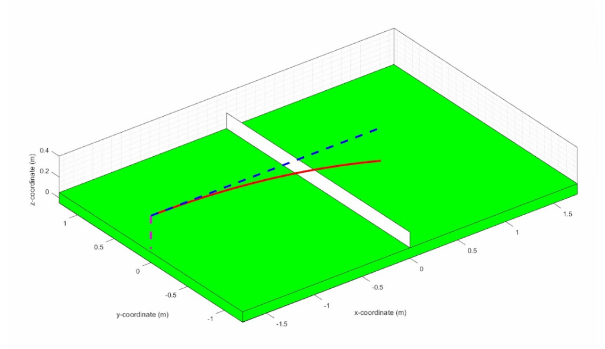
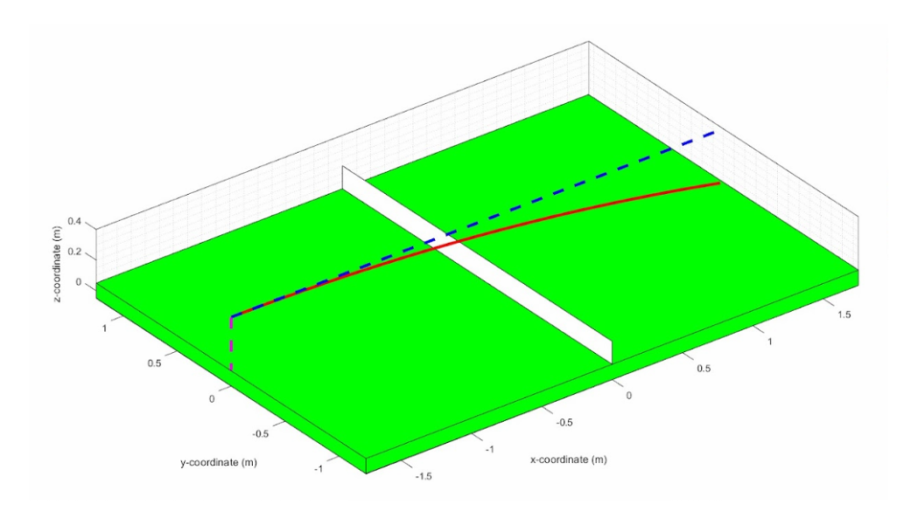
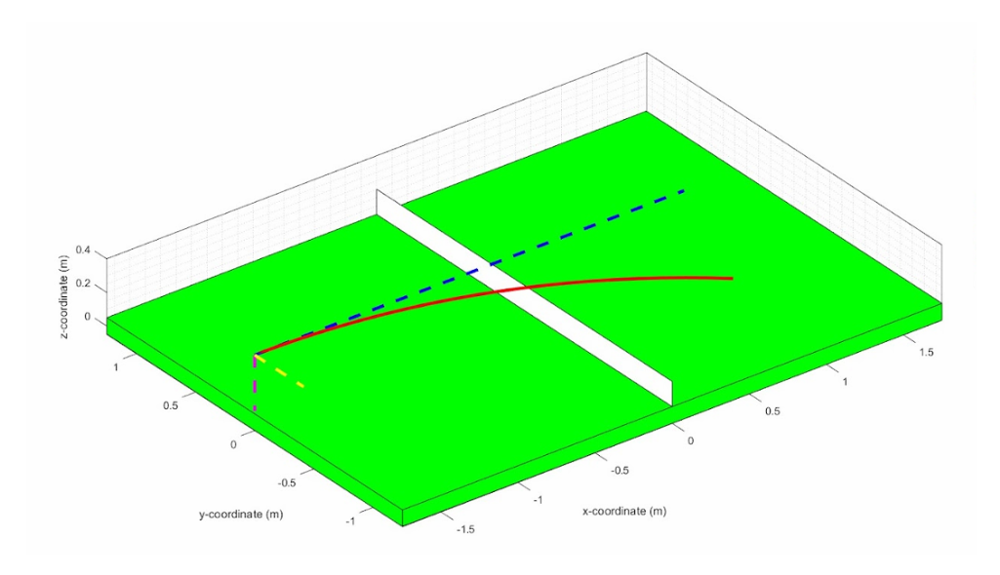
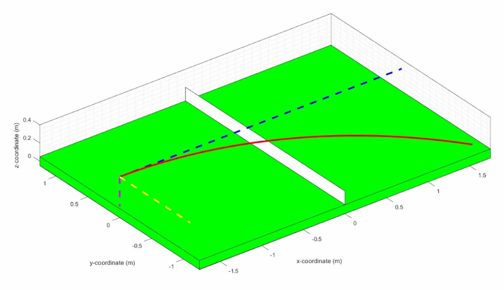

PING PONG PATH PREDICTOR
This project models the 3D flight dynamics of a spinning ping‑pong ball by integrating its translational motion under aerodynamic drag and the Magnus effect. Working in a three‑person team, I led the MATLAB dynamics and simulation development, building the core model around the ball’s physical parameters and the aerodynamic forces that shape its motion.
Using MATLAB’s ODE framework, I simulated the ball’s trajectory under gravity, drag, and spin‑induced lift, producing realistic motion that captures how real table‑tennis shots dip, float, or curve in flight. Because a sphere has identical moments of inertia about all axes, its rotational velocity remains constant, allowing the model to focus entirely on translational dynamics.
Initial conditions for position, velocity, and spin rate define each trial, and MATLAB’s ode45 solver integrates the motion forward in time. The simulation outputs 3D trajectories, axis‑aligned component plots, and a table‑height collision mask that removes all data below the playing surface, paired with a rendered table‑tennis court model for spatial context.
The aerodynamic model incorporates both drag and Magnus lift. Drag opposes the direction of motion, while Magnus lift acts perpendicular to both the ball’s velocity and its spin. Together, these forces create the characteristic dipping, floating, and curving behavior seen in real table‑tennis shots.
By adjusting the angular velocity vector, I reproduced the major spin profiles used in table tennis. No‑spin shots fall predictably under gravity. Topspin drives the ball downward more aggressively, while backspin allows it to stay aloft longer. Sidespin introduces lateral curvature, and combined‑spin cases demonstrate the deceptive arcs players use in competitive matches.
The framework is structured so additional physical effects can be incorporated without changing the overall workflow. Future extensions may include Reynolds‑dependent drag behavior, spin‑rate decay, and contact dynamics to expand the range of trajectory behaviors that can be modeled.




